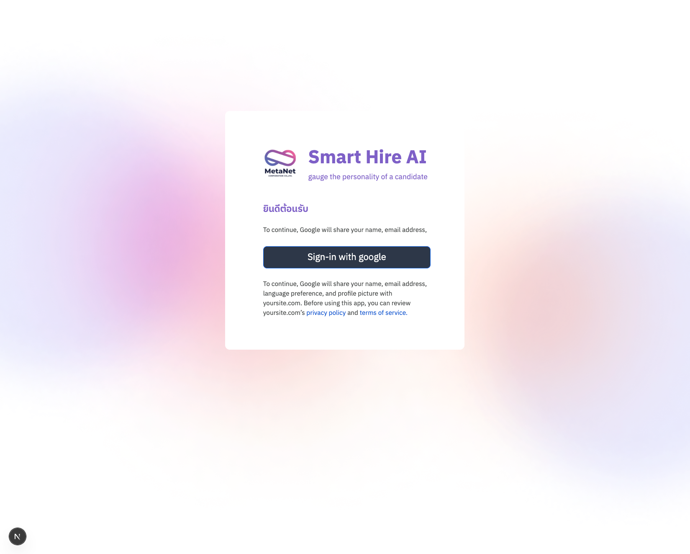
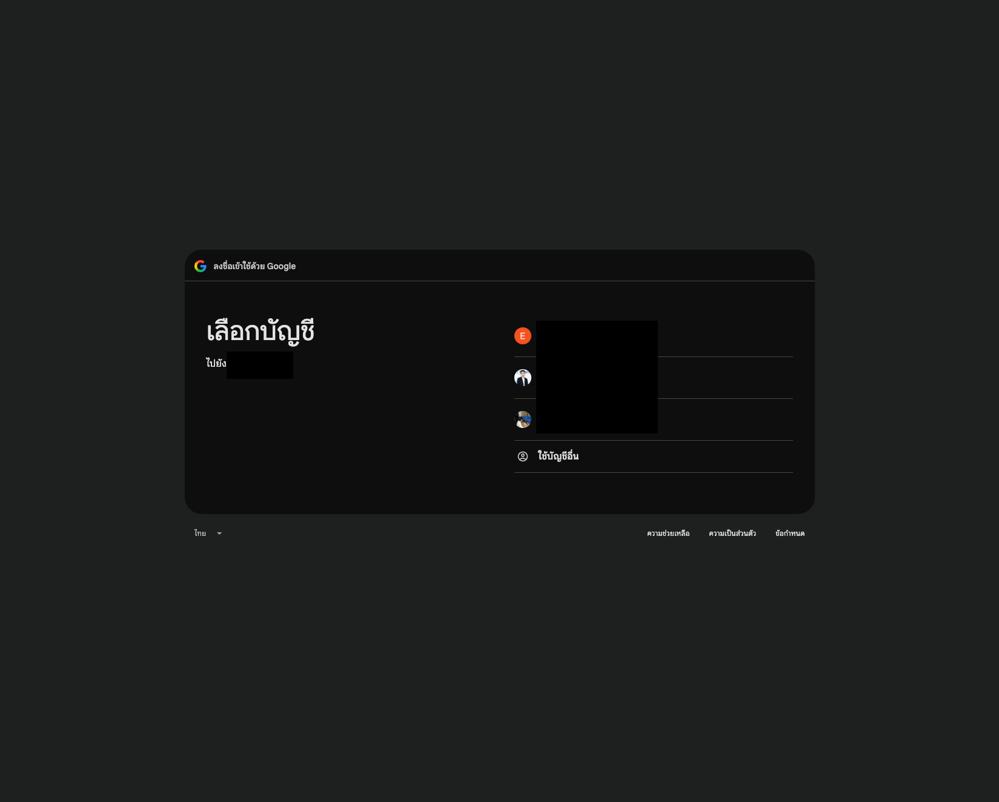
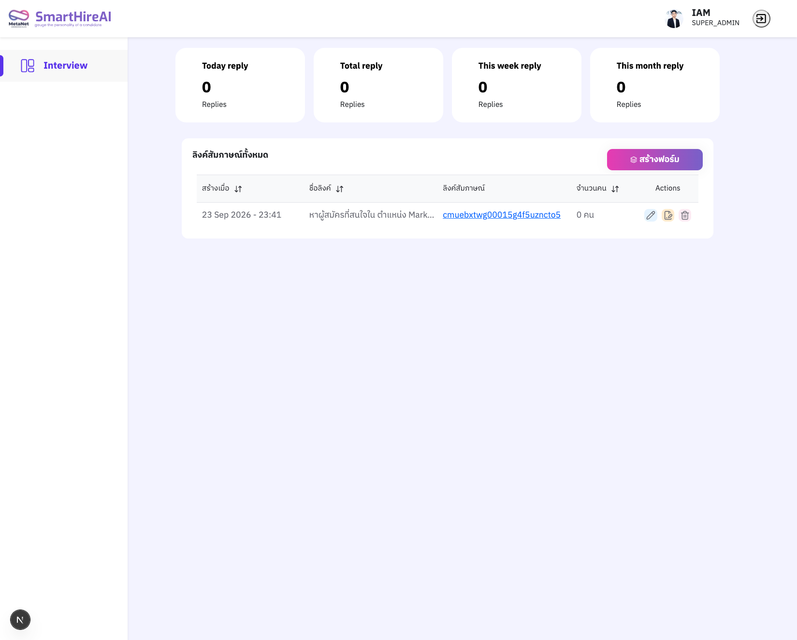
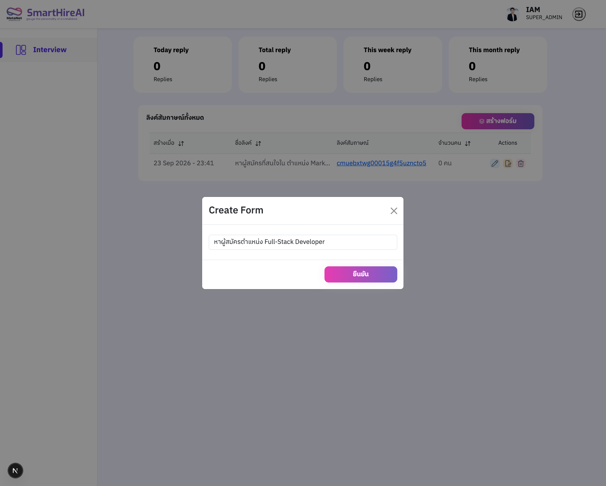
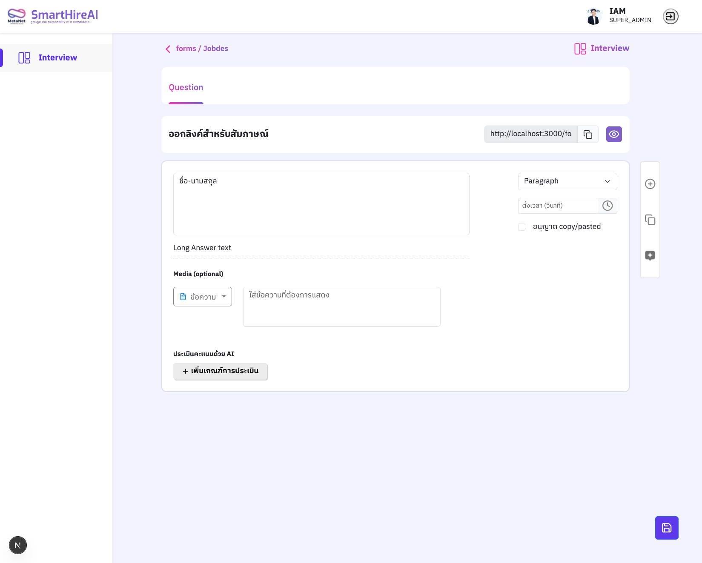
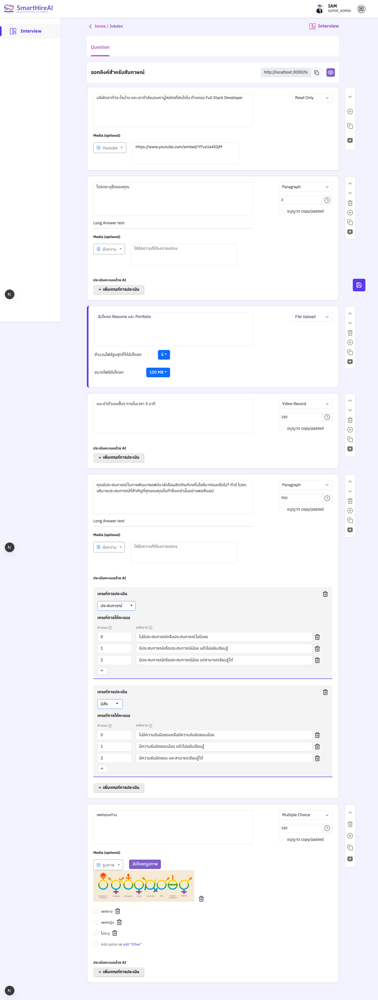
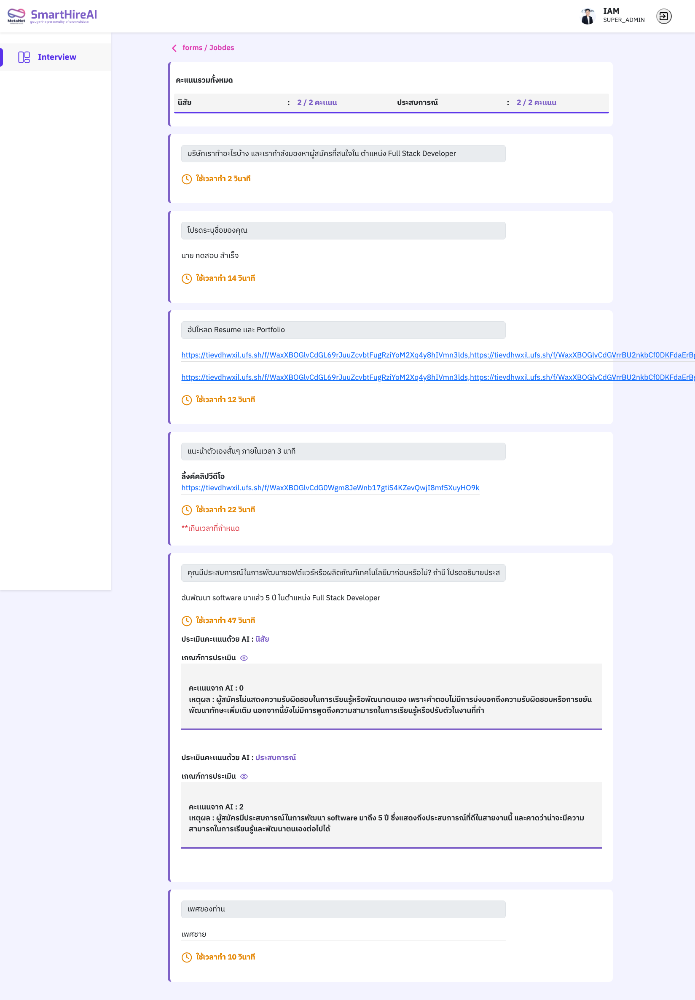

Frontend · ฝั่งผู้ดูแล
หน้าผู้ดูแล — สร้างฟอร์มและตรวจผล
ผู้ดูแลเข้าสู่ระบบด้วย Google แล้วเข้าหน้า /admin/interview เพื่อดูสรุปยอดและรายการลิงก์สัมภาษณ์ สร้างฟอร์มใหม่ได้จากปุ่ม “สร้างฟอร์ม” จากนั้นจะเข้าหน้า builder /admin/form-management2/[formId] ที่มีสองแท็บ คือ Question สำหรับออกแบบคำถามและเกณฑ์ และ Responses สำหรับดูคำตอบและส่งออกเป็น Excel
🎨UI
- React 19.3
- Bootstrap 5.3 + react-bootstrap
- SCSS (สไตล์หลัก)
- Tailwind CSS 4 (ไม่มี Preflight)
- TanStack Table 8
- xlsx (ส่งออก Excel)
- react-drag-drop-files
- react-pdftotext
- lucide-react · react-tooltip
- dayjs · lodash
- IBM Plex Sans Thai (next/font)
🧭หน้าเว็บ (9 หน้า)
- 🔐/ · /admin/loginหน้า Sign-in with Google · ถ้าล็อกอินแล้วจะไปที่
/admin/interview - 📊/admin/interviewการ์ดสรุปยอดคำตอบ และตารางลิงก์สัมภาษณ์ (สร้าง · เปลี่ยนชื่อ · ลบ)
- 🛠/admin/form-management2/[formId]builder คำถาม เกณฑ์ประเมิน ลิงก์สาธารณะ พรีวิว และแท็บ Responses
- 🧾/admin/form-detail/[formAnswerId]คำตอบของผู้สมัครหนึ่งคน พร้อมคะแนนและเหตุผลจาก AI
- 👑/super-admin · /admin/top-up-creditจัดการบัญชีผู้ดูแล (เฉพาะ SUPER_ADMIN) · ข้อมูลการเติมเครดิต
★ความสามารถของ builder
- 8 ประเภทคำถาม เลือกได้จาก dropdown ต่อการ์ด พร้อมปุ่มเลื่อนขึ้น‑ลง คัดลอก และลบ
- สื่อประกอบ ข้อความ · รูปภาพ · YouTube · วิดีโอ แนบกับคำถามได้ทุกข้อ
- จับเวลา ต่อข้อเป็นวินาที และเลือกได้ว่าจะ “อนุญาต copy/paste” หรือไม่
- อัปโหลดไฟล์ กำหนดจำนวนไฟล์สูงสุดและขนาดไฟล์ (เช่น 5 ไฟล์ · 100 MB)
- ประเมินคะแนนด้วย AI เพิ่มเกณฑ์ต่อคำถาม แล้วเขียนรูบริกว่าคะแนน 0 / 1 / 2 หมายถึงอะไร
- สร้างคำถามด้วย AI ให้ GPT เสนอคำถามใหม่ที่ไม่ซ้ำของเดิม พร้อมรูบริก
- ลิงก์และพรีวิว คัดลอกลิงก์
/form/[formId]และเปิด/form/preview/[formId]ที่ไม่บันทึกข้อมูล - Responses ตารางคำตอบพร้อมคะแนนรวม และส่งออก Excel
ภาพหน้าจอ — ฝั่งผู้ดูแล
7 หน้าจอ · คลิกเพื่อขยาย (ภาพยาวเลื่อนดูในกรอบได้)



form.create จะเพิ่มคำถามตั้งต้นให้ก่อนพาไปหน้า builder
ภาพยาว


ภาพยาว
